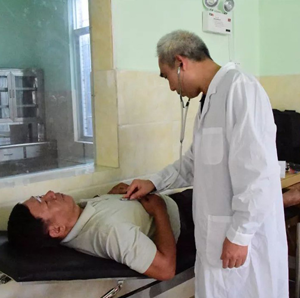
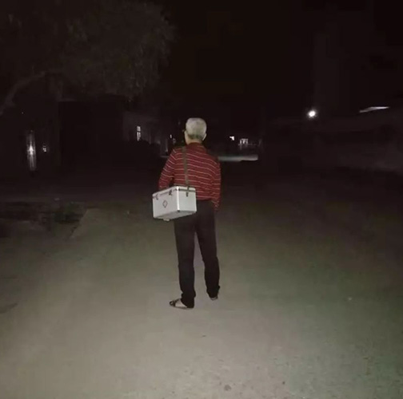
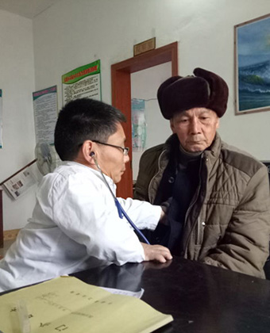

在落后不为人知的村落里，每个人都憧憬着外面的世界，常
年驻村在山里的支教、医生等等，十年如一日的为改善现状而努力着，忍受艰苦，忍受
困难，不忘初心，始终如一。
36年，他从未离开过自己的岗位，坚守在马踏镇天星坡村的卫生站，用尽所学为当地老百姓解除病痛，把最美的青春留给了偏远落后的乡村。 作为一名乡村医生，汪武辉以最大的热情投入到农村医疗卫生事业中，不畏农村条件的艰苦，默默倾注心血，奉献自己的青春年华，守护着天星坡村民的健康。
作为一名乡村医生，汪武辉以最大的热情投入到农村医疗卫生事业中，不畏农村条件的艰苦，默默倾注心血，奉献自己的青春年华，守护着天星坡村民的健康。
汪武辉从小深受同为医生的叔叔的熏陶，热爱医学，跟叔叔学习医术 ，在茂名进修结束后又继续回到乡下。医生这个职业，无论在哪里都是一个“香饽饽”，汪武辉也曾犹豫过要不要到城市里就业，但看到穷苦村民看病难的现状，心中不忍，就留在了村中。
汪武辉每天都很忙碌，不到80平米的医务室，从看病、配药、打针都是由他一个人操作。他怀着“医者父母心”的思想，耐心听取病人讲述病情。工作中无微不至地观察、照顾每一位病人，谨慎用药。不管是严寒还是酷暑，白天还是夜晚，他都恪尽职守，常常来回折腾一夜都没有睡觉。有时候在家刚端起饭碗，就有病人上门，他就会放下碗筷先看病，就是大年初一也没有请过假，更谈不上平常的周末。
  2017年12月的一天，天气十分寒冷，天星坡村有一名叫张紫兰的村民，当晚已经是深夜两点了，她突然感觉胃痛难忍，想找汪武辉医生但又想他已经忙碌了一整天，不好打扰他休息。但随着时间一点一点过去，胃痛也越发厉害，她只好拿起电话拨打了汪医生的电话。电话很快就接通了，汪医生了解了情况，马上爬起来，带好自己的随身医药箱，不顾严寒骑车来到张紫兰家里，为她看病、配药、打针，并嘱咐她注意事项。汪武辉整夜都没有休息，第二天仍照常给村民看病。汪武辉就是这样，兢兢业业，不辞辛劳为村民。为了能更好地为人民服务，汪武辉每天坚持学习专业知识，不断学习新知识、积累各方经验、锻炼新技术，尽自己所能为村民服务。一直以来，他保持着良好的医德、严谨的工作态度，不断提高自己的医术，任劳任怨，以微笑去鼓励病人。
作为一名乡村医生，汪武辉以最大的热情投入到农村医疗卫生事业中，不畏农村条件的艰苦，默默倾注心血，奉献自己的青春年华，守护着天星坡村民的健康。
汪武辉:把最美的青春留给乡村


寻找最美乡村医生
盐城村医朱德荣身残志坚 从医35载守护乡邻健康

盐城高新区盐渎街道同桂村村医朱德荣的右脚残疾，他16岁辍学后被村里推荐去学医，服务乡邻已有35个年头。朱德荣服务乡邻乐此不疲，经常一个电话来，随时出诊。在诊所里脏活累活都抢着干，很快，这个勤快的小伙子得到了前辈们的认可，一年后，渐渐放手让他接诊、出诊，朱德荣可以独当一面了。
由于走动不便，出诊需要，先后骑坏了5辆自行车和3辆电瓶车。由于每次接诊、出诊，朱德荣总忘不了把手机号码告诉患者，或加上微信。到目前，全村1900多人口中，建了150人的签约服务群，130人的预防接种群，63人的妇幼保健群。
古老的村庄有3000多人，看病靠陈医生一个人

塔石镇泽随村是一个古老的村庄，有3000多人口，由于乡村医生普遍年长，新人接不上，看病基本上是靠陈医生一个人。
龙游县塔石镇泽随村乡村医生陈树荣就是这千百个普通乡村医生中的一员。今年58岁的陈树荣，17岁开始学医，因患小儿麻痹症导致右下肢残疾，被乡亲们称为“拐医生”。
40年来，他默默地坚守着这片淳朴而熟悉的土地，用最温暖、最无私的方式诠释着对乡邻浓浓的爱。 在40年从医生涯中，对待行动不便的病人他都风雨无阻，随叫随到，一年365天，每天至少出诊4次。
贵州深山里的白衣天使

2008年，钟晶辞去贵阳长江医院的工作，跟随在乡镇工作的丈夫来到黔西贞丰县龙河村，为当地缺医少药的百姓开起了村卫生室，这也是龙河村4000多名村民唯一能进行新农合报销的卫生室。从此，她在这里一呆就是四年。四年的坚持，她获得了村民的认可与感激，也获得了社会的肯定和赞誉。
在龙河村卫生室，她的衣柜是装药的纸箱，也买不到她爱吃的巧克力和奶茶，电力不足时还常停电，晚上有时候只能靠蜡烛或应急灯照明。没有澡堂，只能用两个大桶提水到屋内，蹲在一个大盆里洗澡，简易厕所臭气冲天……钟晶说：其实也没觉得有多苦，“最苦的时候是你走五个小时的山路去给人看病。”

肖九林：最萌身高演绎最强坚守
在于都县段屋乡，有一名身高仅有90公分的村医，他叫肖九林。正是这名“小矮人”村医，凭着治病救人、扶危济困的初心与大爱，以最迷你的身躯，守护村民健康三十载，赢得了乡民们的信任与赞誉，同时也创造了属于自己的医者传奇。
肖九林表示，如今的交通越来越发达，自己也开上了电动汽车，在新时代做好村医、守护村民健康的信心自然越来越足了。
感人瞬间
- 肖九林在日常行医当中，一直坚持开基本药物、开平价药、适度用药，想办法减轻村民的看病负担。对一些病人赊欠的医药费，也从不催促。在贫困户肖春莲家中，因感冒发烧刚到看医生的她告诉笔者，之所以习惯找肖九林看病，主要是因为他开的药量比较适中，遇到手头紧张的时候，医药费也可以赊欠。
- 既然做出了承诺，选择了从医，就不能轻言放弃。肖九林深信，人定胜天，办法总比困难多。面对一连串的困难和击打，他总是不气馁，不退缩，越挫越勇。雨天夜间出诊不便，就让老婆作伴，或者让老婆背着出门上户；步行速度慢，肖九林学会了骑三轮车和电动车代步；个子矬矮，他便在卫生室量身打造，制备了一些合身的板凳设备；
- 为尽快提高医疗技术水平，肖九林白天看病，晚上看书，大量阅读各类医学书籍，同时通过网络咨询，向专家虚心讨教，持之以恒的钻研，肖九林的医术逐渐提高，最终获得了村民的认可推崇，在儿科方面还有自己独到的建树和专长。随时医疗卫生信息化的推进，他还学会了操作使用电脑办公软件，开展居民健康档案信息录入。现如今，在村医领域正常人能干的活，肖九林一样都不落下。
- 肖九林在日常行医当中，一直坚持开基本药物、开平价药、适度用药，想办法减轻村民的看病负担。对一些病人赊欠的医药费，也从不催促。在贫困户肖春莲家中，因感冒发烧刚到看医生的她告诉笔者，之所以习惯找肖九林看病，主要是因为他开的药量比较适中，遇到手头紧张的时候，医药费也可以赊欠。
- 既然做出了承诺，选择了从医，就不能轻言放弃。肖九林深信，人定胜天，办法总比困难多。面对一连串的困难和击打，他总是不气馁，不退缩，越挫越勇。雨天夜间出诊不便，就让老婆作伴，或者让老婆背着出门上户；步行速度慢，肖九林学会了骑三轮车和电动车代步；个子矬矮，他便在卫生室量身打造，制备了一些合身的板凳设备；
- 为尽快提高医疗技术水平，肖九林白天看病，晚上看书，大量阅读各类医学书籍，同时通过网络咨询，向专家虚心讨教，持之以恒的钻研，肖九林的医术逐渐提高，最终获得了村民的认可推崇，在儿科方面还有自己独到的建树和专长。随时医疗卫生信息化的推进，他还学会了操作使用电脑办公软件，开展居民健康档案信息录入。现如今，在村医领域正常人能干的活，肖九林一样都不落下。
- 肖九林在日常行医当中，一直坚持开基本药物、开平价药、适度用药，想办法减轻村民的看病负担。对一些病人赊欠的医药费，也从不催促。在贫困户肖春莲家中，因感冒发烧刚到看医生的她告诉笔者，之所以习惯找肖九林看病，主要是因为他开的药量比较适中，遇到手头紧张的时候，医药费也可以赊欠。
- 既然做出了承诺，选择了从医，就不能轻言放弃。肖九林深信，人定胜天，办法总比困难多。面对一连串的困难和击打，他总是不气馁，不退缩，越挫越勇。雨天夜间出诊不便，就让老婆作伴，或者让老婆背着出门上户；步行速度慢，肖九林学会了骑三轮车和电动车代步；个子矬矮，他便在卫生室量身打造，制备了一些合身的板凳设备；
- 为尽快提高医疗技术水平，肖九林白天看病，晚上看书，大量阅读各类医学书籍，同时通过网络咨询，向专家虚心讨教，持之以恒的钻研，肖九林的医术逐渐提高，最终获得了村民的认可推崇，在儿科方面还有自己独到的建树和专长。随时医疗卫生信息化的推进，他还学会了操作使用电脑办公软件，开展居民健康档案信息录入。现如今，在村医领域正常人能干的活，肖九林一样都不落下。
©2019广西机电职业技术学院 版权所有
开发团队：杨鸿 陈深 张燕琼
开发团队：杨鸿 陈深 张燕琼